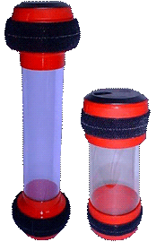
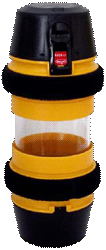
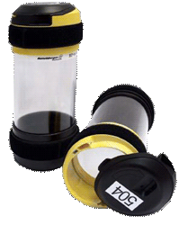
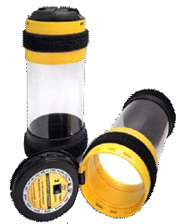

-
Область применения
Типы систем
Типы станций
Общее оборудование
Аксессуары
Транспортировочные средства
Программное обеспечение
-
Область применения
Типы систем
Регистраторы клиентов
Цифровые дисплеи
Клавиатуры вызова
Аксессуары
Программное обеспечение

РАЗНОВИДНОСТИ КАПСУЛ:
Капсулы для трубопроводов диаметром 110 мм:
Транспортировочные капсулы со сдвигаемой крышкой "Swivel lid Carrier NW110 K/L/B, X-Ray"
Транспортировочные капсулы с откидной крышкой "Flip-top 110 K/L";
Транспортировочные капсулы со сдвигаемой крышкой "Security Carrier 110K";
Транспортировочные герметичные капсулы с откидной крышкой "Swing Top Carrier NW110";
Капсулы для трубопроводов диаметром 160 мм:
Транспортировочные капсулы со сдвигаемой крышкой "Swivel lid NW160 K/L"
Автоматические капсулы "APA NW160";
Транспортировочные герметичные капсулы со сдвигаемой крышкой "Swivel lid NW160 Leak Resistance";
Капсулы для стальных трубопроводов:
Транспортировочные капсулы со сдвигаемой крышкой "Swivel lid NW4 inch"Транспортировочные капсулы для горячих материалов "Carrier Steel NW75"
Капсулы и транспортировочные сумки для трубопроводов диаметром 63/90/110 мм:
Транспортировочные капсулы со сдвигаемой крышкой "Swivel lid Carrier NW 63/90/110"Транспортировочные сумки"Cash Bag NW90"
ТРАНСПОРТИРОВОЧНЫЕ КАПСУЛЫ СО СДВИГАЕМОЙ КРЫШКОЙ "SWIVEL LID CARRIER NW110 K/L/B, X-RAY"

Капсулы со сдвигаемой крышкой “Swivel Lid NW110 K/L/B, X-RAY” применяются для транспортировки различных предметов весом от 0,5 до 1,0 кГ (документы, деньги, пробирки с жидкими веществами, рентгеновские снимки и пр.) при помощи системы пневмопочты по трубопроводам диаметром 110 мм. Корпус капсул выполнен из высококачетсвенного поликарбоната.Открытие крышки этих капсул производится путем сдвига крышки.
Для предотвращения несанкционированного доступа к содержимому капсул возможно их запирание на замок перед отправкой получателю. При применении капсул в медицинских учреждениях обеспечивается максимальная температура дезинфекции – 120 °С в течении не более 30 сек.
Существуют следующие типоразмеры капсул со сдвигаемой крышкой (внутренние размеры - длина и диаметр, мм):
a) NW110K:
- 200х82 мм, 230x82 мм с красной (желтой, оранжевой) головкой, запираемые индивидуальными ключами, либо с универсальным ключем;
- 335х82 красная головка;
б) NW110L: 330x72 мм красная (желтая, зеленая) головка;
в) NW110B: 182х85 мм красная головка;
г) NW110 X-RAY: 370x60 мм.
При использование капсул со сдвигаемой крышкой могут использоваться следующие акссесуары:
а) штативная вставка для пробирок для капсул 110К;
б) штативная вставка для пробирок для капсул 110L;
б) энергонезависимые чипы - транспондеры.

ТРАНСПОРТИРОВОЧНЫЕ КАПСУЛЫ C ОТКИДНОЙ КРЫШКОЙ "FLIP-TOP CARRIER NW110K/L"

Капсулы с откидной крышкой “Flip-top 110” применяются для транспортировки различных предметов весом от 0,5 до 1,0 кГ (документы, деньги, пробирки с жидкими веществами, рентгеновские снимки и пр.) при помощи системы пневмопочты по трубопроводам диаметром 110 мм. Корпус капсул выполнен из высококачетсвенного поликарбоната. Открытие крышки этих капсул производится путем нажатия на клавишу, расположенную на откидной крышке. При необходимости защиты содержимого капсулы от несанкционированного доступа могут использоваться одноразовые цифровые пластиковые пломбы. Кроме того, при использовании транспондеров, располагаемых под откидными крышками капсул, возможна запись информации о номере капсулы, номере филиала, дате и времени регистрации, ID-номере пользователя и номере одноразовой цифровой пластиковой пломбы, которой будет запираться капсула перед отправкой получателю. Обратное считывание информации может быть произведено у получателя при применении соответствующего оборудования и программного обеспечения.Существуют следующие типоразмеры капсул с откидной крышкой (внутренние размеры - длина и диаметр, мм):
а) 230х76, используются главным образом для пересылки денег;
б) 330х76 110L;
в) 370х76 Х-Ray, используются главным образом для транспортировки рентгеновских снимков;
г) 230х80 110К;
д) 270х80 110.
При использование капсул с откидной крышкой могут использоваться следующие акссесуары:
а) одноразовые цифровые пластиковые пломбы:
б) энергонезависимые чипы-транспондеры;
в) номерные наклейки: номер капсулы и номер филиала;
г) штативные вставки для пробирок: для капсул 110KL;
д) фиксирующие пакеты:
- для капсул 110L (323x274 мм), (220x306 мм), (306X220 мм);
- для капсул 110К (220X306 мм).
ТРАНСПОРТИРОВОЧНЫЕ КАПСУЛЫ СО СДВИГАЕМОЙ КРЫШКОЙ "SECURITY CARRIER NW110K";

ТРАНСПОРТИРОВОЧНЫЕ КАПСУЛЫ C ОТКИДНОЙ КРЫШКОЙ "SWING-TOP CARRIER NW110"
